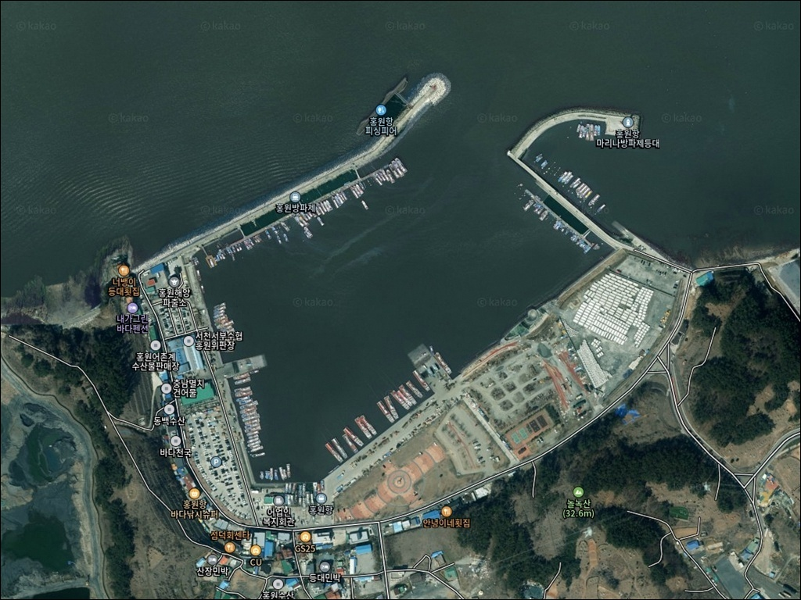
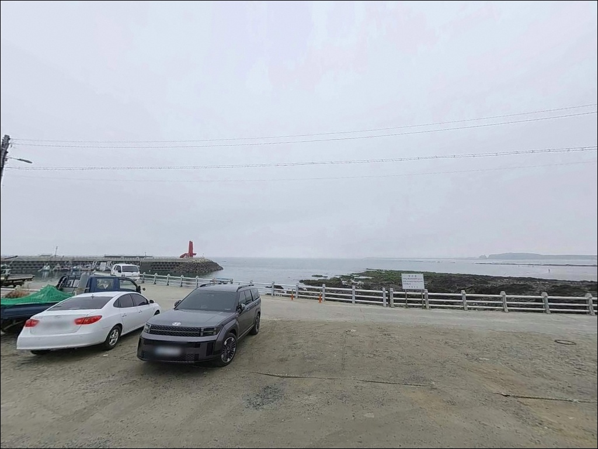
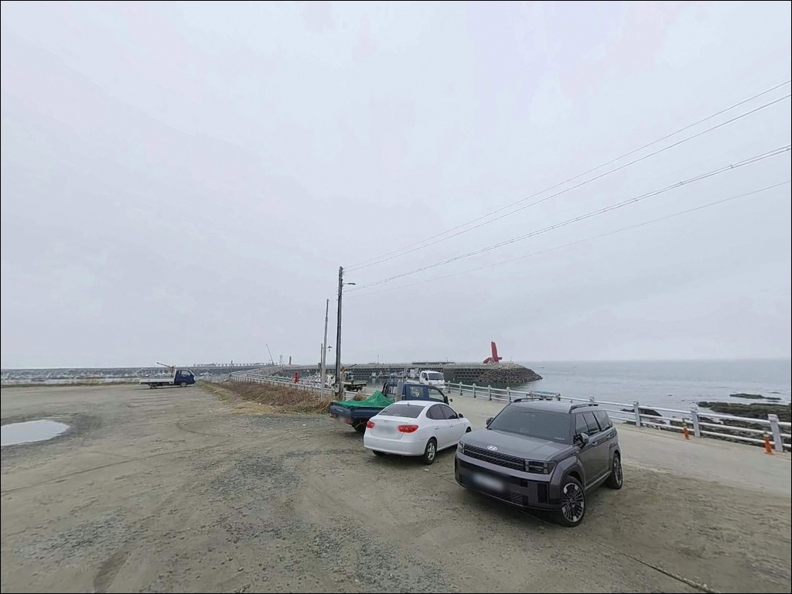
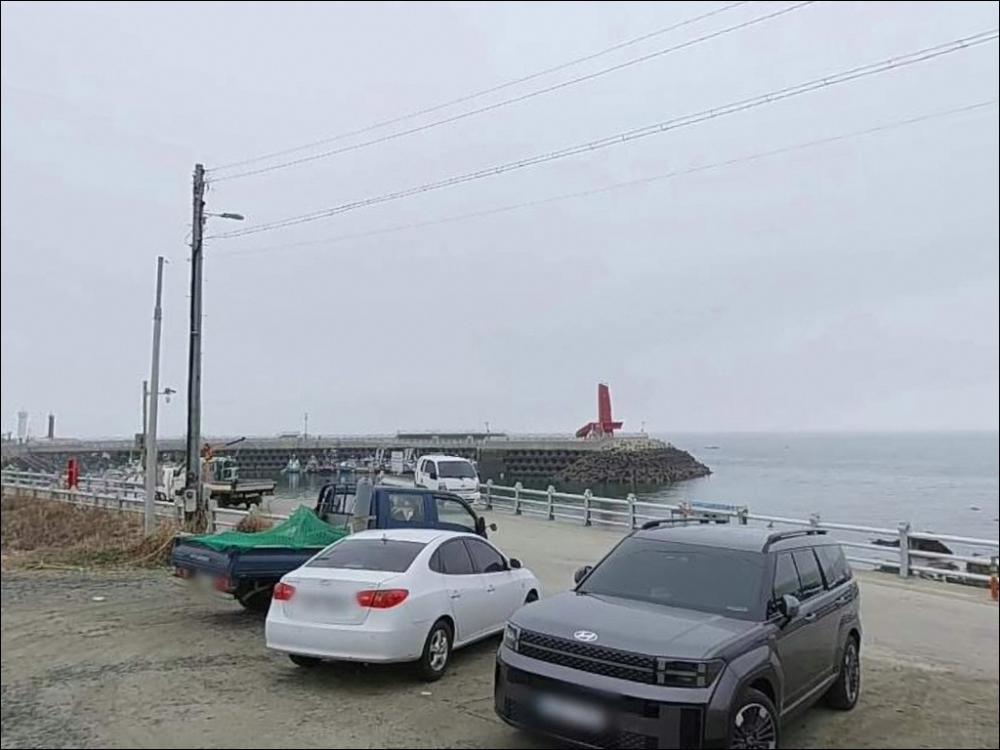
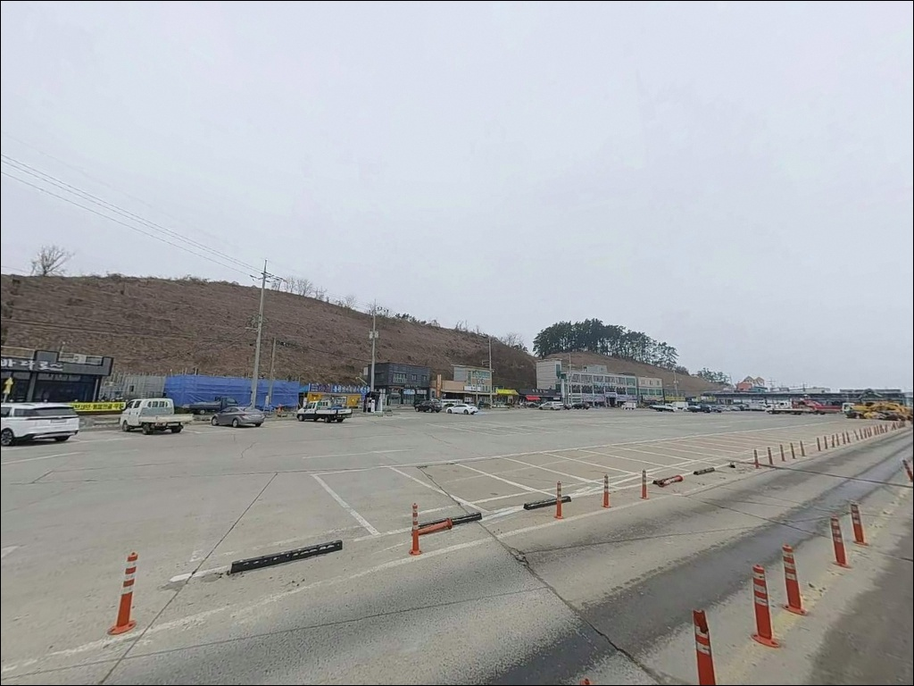
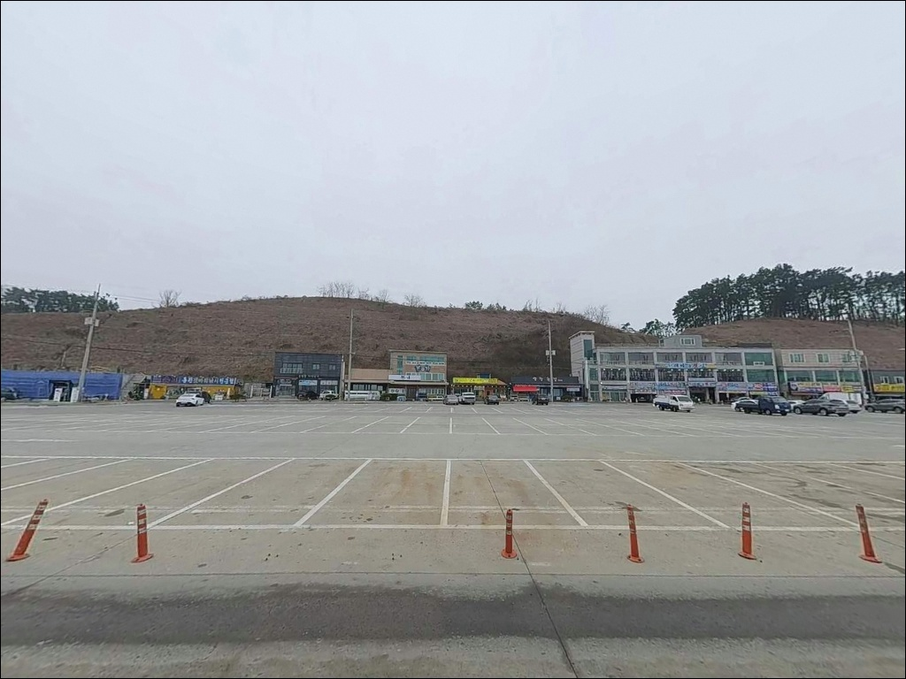
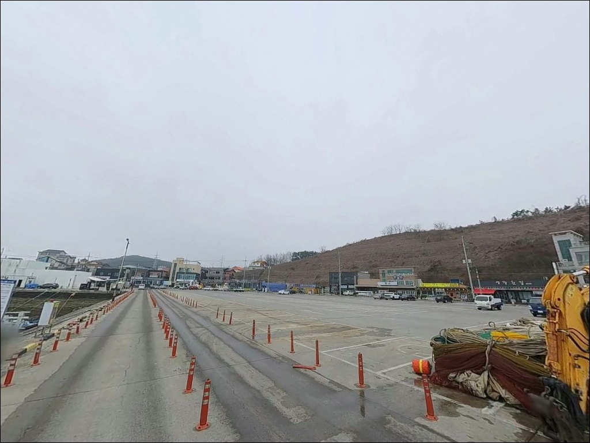
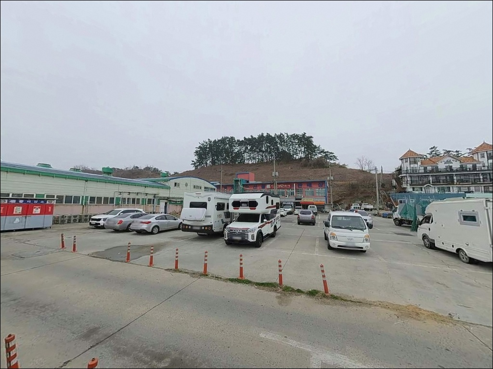
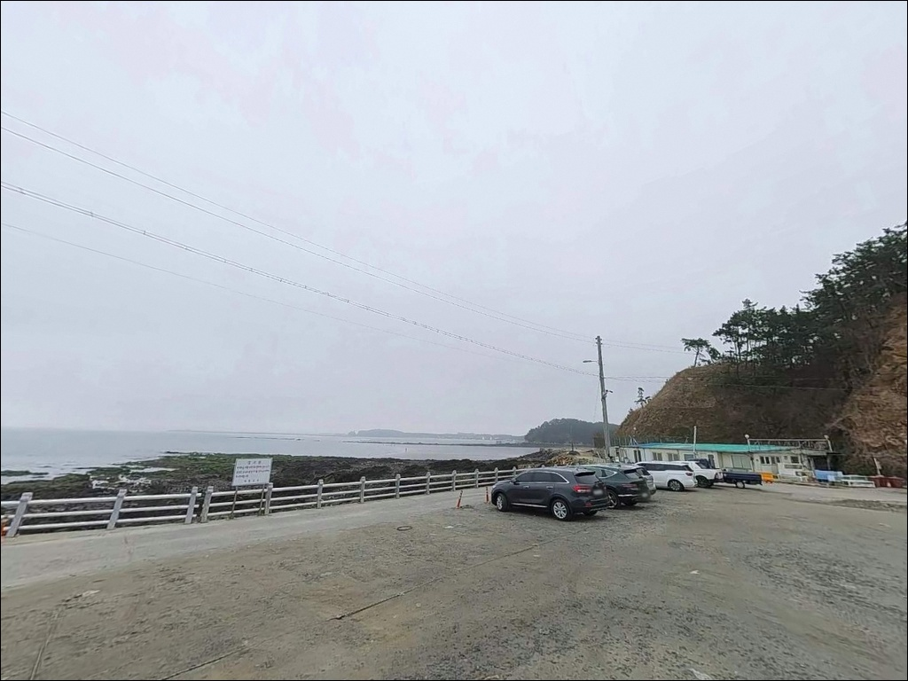

홍원항, 충남 서천군 바다의 여운이 오래 남는 차박, 낚시 감성 포인트
이 페이지에는 광고(제휴 링크 포함)가 있으며, 광고 링크를 통해 구매하면 운영자가 판매 수익 또는 수수료를 받을 수 있습니다. 포인트 사진: 카카오맵 스카이뷰·로드뷰. 이 페이지의 지도·사진 이미지는 카카오맵의 실제 서비스 이미지와 다를 수 있습니다.


포인트 안내
홍원항
충남 서천군 서면 도둔리 1222-59
낚시 방식을 미리 결정하지 않고 홍원항을 찾으면
현장에서 도보 방파제와 선상 출조 사이에서
판단을 못 하고 시간을 낭비하는 상황이 생깁니다.
도보 방파제 낚시는 물때와 포인트 자리를
사전에 파악한 상태에서 움직여야 하고,
선상낚시는 출조선 예약이 전제 조건입니다.
충남 서천군 서면 도둔리에 자리한 홍원항은
1991년 국가어항으로 지정된 서천 대표 항구입니다.
서방파제 502m, 동방파제 390m의 방파제 구조와
공식 낚시잔교 100m를 갖추고 있으며,
서해안 전어 집산지이자 수산물 거점으로
잘 알려진 곳입니다.
이 글은 홍원항의 방파제 지형 조건,
차박 여건, 낚시 스타일별 공략 방향에 집중합니다.
조황 단정이나 특정 어종 보장은
이 글의 범위에 포함되지 않습니다.

1. 진입 동선과 포인트 접근성
홍원항으로 이어지는 홍원길은
어선 출조점과 낚시 전문점이 밀집한
항구 전용 도로 구조입니다.
도로 폭이 충분하고 포장 상태가 양호한 편이라
SUV·미니밴 수준의 차량까지 진입에
큰 부담이 없는 구조입니다.
물양장 590m 규모의 항 내부는
일방통행 구간 없이 회차가 가능하며,
대형 차량도 항 안쪽에서 방향 전환이 가능한 편입니다.
주차는 공식 다기능어항 개발계획에 포함된
공영주차장을 이용하는 방식이 기본이며,
낚시잔교 인근에도 차량 정차 공간이 형성되어 있습니다.
다만 가을 전어 축제 시즌에는
차량 혼잡이 심해지는 구조라
이 시기에는 이른 시간 진입이 실용적입니다.
낚시잔교는 도보낚시 동선과 어선 정박 구간이
분리된 구조로, 원투낚시 진입 편의성이 높은 시설입니다.

2. 차박 환경과 야간 체류 여건
홍원항은 수산시장, 회센터, 낚시 출조점이
항 주변에 집중된 관광형 어항 구조입니다.
야간에도 어선 작업 조명과 상가 가로등이 남아 있어
완전한 암흑 환경은 아닙니다.
민가와 상가가 인접해 차량 통행과 사람 왕래가
어느 정도 유지되는 분위기입니다.
조용하고 프라이빗한 차박 환경을 기대하고 방문한다면
기대를 낮출 필요가 있습니다.
반면 편의시설이 가까운
항구형 베이스캠프로 활용하는 방식이라면
실용적인 선택이 됩니다.
선상낚시 출조가 새벽 시간부터 시작되는 만큼,
출조선 대기를 위한 전날 주박 베이스로는 적합한 편입니다.
외항 방향은 서해 바람 영향을 직접 받는 구조입니다.
기상 예보에서 서풍이 강하게 예보된 날에는
방파제 끝단 체류보다
항 내항 쪽에 자리를 잡는 편이 낫습니다.


3. 주변 편의시설 및 인프라 현황
홍원항 반경 1km 이내에 수산시장과 회센터가 밀집해 있어
낚시 후 수산물을 바로 구입하거나
식사를 해결하기에 편리한 환경입니다.
홍원길 일대 낚시 출조점들이
미끼와 채비를 함께 판매하는 경우가 있어
소형 소품은 현장에서 보충이 가능한 편입니다.
반경 3km 이내에는 춘장대해수욕장과 연결되는
서면 해안 관광 권역이 형성되어 있어
식당과 편의시설 접근이 비교적 수월한 지역입니다.
반경 10km권에서 서천군 중심권에 닿을 수 있어
대형 마트와 의료시설 이용이 가능합니다.
출발 전 식수와 얼음, 비상약품을 기본으로 갖추는 편이 낫지만,
이 항구는 현장 보충이
다른 외딴 포인트보다 수월한 여건입니다.

4. 진입 전 반드시 챙겨야 할 준비사항
홍원항 방문 전 가장 먼저 확인할 것은 물때입니다.
서해 특성상 조석 간만의 차가 크지만,
홍원항은 인근 항구 대비 조차가 완만한 편이라
낚시 가능 시간대가 상대적으로 넓습니다.
바다타임에서 서면 홍원항 기준 물때를 확인하고,
조금 전후 또는 만조 전후 타이밍을 중심으로
출발 시각을 맞추는 것이 기본 전략입니다.
서해 항구형 포인트에서는 조금 전후 물때에
낚시 가능 시간대가 집중되므로,
물때 확인이 출조 성패의 첫 번째 변수입니다.
선상낚시를 계획한다면 출조선 예약이 사전에 필요합니다.
항구낚시, 원조낚시, 서해바다낚시,
에프원낚시, 힐링낚시, 가자낚시 등
다수의 출조점이 운영 중이며,
승선 시 신분증 지참과 승선명부 작성이 필수입니다.
테트라포드 구간 진입 시 미끄럼 사고 위험이 있으므로
갯바위화나 논슬립 신발을 반드시 착용합니다.
야간 낚시 시에는 헤드랜턴과 구명조끼를 갖추고,
방파제 끝단에서는
파도 넘침 가능성을 항상 염두에 둬야 합니다.

5. 지형 기반 낚시 여건 분석
홍원항의 방파제는 서방파제 502m와 동방파제 390m로 구성됩니다.
두 방파제가 항구를 감싸는 구조로,
내항은 비교적 잔잔한 수면이 유지되고
외항은 조류 영향을 직접 받는 구간입니다.
공식 낚시잔교 100m가 다기능어항 개발계획에 포함된
도보낚시 전용 접안 공간으로 갖춰져 있습니다.
방파제 끝단과 돌제(310m) 주변은
수심이 급변하는 구간으로,
조류 흐름이 살아 있는 시간대에
루어와 원투 채비가 잘 맞는 지형입니다.
방파제 일부 구간에 테트라포드가 배치되어 있어
석축이나 발판이 안정적인 자리를 먼저 확인하고
앉는 편이 좋습니다.
내항 쪽은 완만하고 안정적인 수심 구조로,
전어나 숭어 등 표층~중층 어종을 노리는
찌낚시에 어울리는 환경입니다.
가을 전어 시즌에는 항내 전역에서
전어 릴찌낚시가 가능한 시기가
형성되는 것으로 전해집니다.
이 포인트의 최신 조황은
출조 전에 꼭 검색해 보시기 바랍니다.


6. 포인트에 어울리는 낚시 스타일
원투낚시는 낚시잔교와 방파제 끝단을 활용하는 방식이
이 포인트 구조에 잘 맞습니다.
수심이 확보되는 끝단 방향으로 채비를 보내면
감성돔과 붕장어를 노려볼 수 있는 구간이며,
정조 타이밍에 바닥을 탐색하는 방식이 유효합니다.
릴찌낚시는 내항과 방파제 중간 구간에서
숭어·학공치·전어를 대상으로 활용하기 좋습니다.
만조 전후 조류가 살아 있는 시간대에
표층~중층을 흘리는 방식이 이 지형에 어울립니다.
루어낚시는 방파제 석축과 테트라포드 근처에서
웜이나 지그헤드를 활용하는 방식이 어울립니다.
우럭을 대상으로 바닥층을 탐색하는
라이트게임이 이 포인트의 방파제 구조에 맞는 접근입니다.
봄과 가을 시즌에는 방파제 외항 방향에서
에깅 채비를 시도해볼 수 있는
지형 조건을 갖추고 있습니다.

7. 대안 포인트와 플랜 B 동선
홍원항 조건이 맞지 않거나 주차 혼잡이 심한 경우
첫 번째 대안은 마량항입니다.
같은 서천군 서면 해안선에 위치한 항구로,
조류 흐름이 좋은 외항 구조를 갖추고 있으며
선상낚시도 활발히 운영되는 포인트입니다.
어종 구성이 유사한 편이라
당일 이동 선택지로 적합합니다.
서천 화력발전소 방조제(동백정 방향)는
홍원항과 함께 서천권 감성돔 도보 포인트로
거론되는 곳입니다.
긴 방조제 구조로 원투낚시와 릴찌낚시에
공간 여유가 있어 홍원항이 혼잡할 때
여유 있는 자리를 확보하기 좋은 대안입니다.
차박 베이스만 이동하고 싶다면
춘장대해수욕장 인근이 대안이 됩니다.
비시즌 기준 넓은 공영주차장을 활용할 수 있고
홍원항보다 주변 분위기가 한산한 편입니다.
다만 야영·차박 허용 범위는 시기에 따라 달라지므로
현장 안내판을 먼저 확인해야 합니다.

홍원항, 서천 서해안 낚시 거점을
제대로 활용하는 방법
도보 방파제 낚시와 선상낚시를 함께 소화할 수 있는
항구를 찾는다면 홍원항은 서천권에서
가장 많은 선택지를 갖춘 포인트입니다.
낚시잔교, 서방파제, 동방파제, 수산시장까지
항 안에 모여 있는 구조는
여러 스타일의 낚시인이 각자의 방식을
한 곳에서 풀어내기 좋은 환경입니다.
반면 관광형 어항 특성상
완전한 정숙 차박 환경을 기대하기는 어렵습니다.
선상낚시 새벽 출조 베이스로 전날 주박하거나,
수산시장을 들르는 겸 방파제 낚시를 짧게 즐기는 방식이
이 항구를 가장 효율적으로 쓰는 방법입니다.
물때 확인, 낚시 스타일 결정,
선상낚시라면 출조선 예약까지 미리 갖추고 간다면
서천 서해안에서 기억에 남는 출조가 될 수 있는 곳이며,
방파제 옆에 차를 세우고 하룻밤 머무는 낚시 여행자에게도
나쁘지 않은 거점 항구입니다.